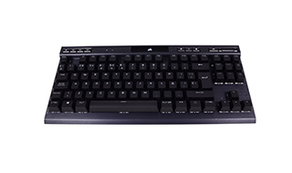
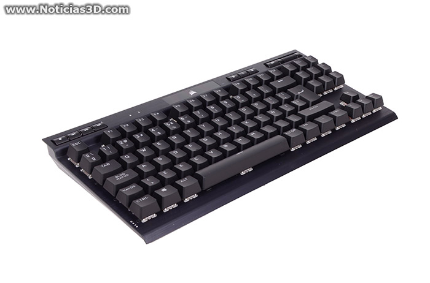

Nuevo CORSAIR K70 RGB TKL
El K70 RGB TKL, un modelo compacto, de la familia Champion Series con muchas similitudes, y otras funciones y sensaciones que hoy compartimos con ustedes.
Corsair ha hecho del texturizado con líneas triangulares y los tonos negros con un ligero toque de amarillo ácido su seña, una textura que usa en sus reposamuñecas (aunque en este caso este extra no está incluido) y en la cara superior de la caja de sus teclados, haciendo de fondo, rodeando la foto del producto.
La caja nos indica las principales características del K70 RGB TKL como sus interruptores Cherry MX Red o la distribución ISO con fila inferior estándar para una mayor compatibilidad con keycaps aunque, vemos poco probable que queráis cambiar sus teclas de policarbonato con un grosor de 1,5 mm y doble inyección para reforzar los caracteres y su aspecto translúcido.
El K70 RGB TKL cuenta con teclas multimedia, tiene RGB en todos sus leds salvo en los indicadores de bloqueo de mayúsculas y de desplazamiento para las teclas de dirección, dos puntos de color blanco, ubicados a la derecha de las teclas multimedia, estas posicionadas en la esquina superior izquierda. Estas cuatro teclas multimedia, como las tres de gestión del teclado, son cóncavas y poseen separadores metálicos.
Además de las teclas de control de reproducción, el K70 RGB TKL cuenta con rosca de volumen con pasos del 2%, fabricada en metal, y a su lado un botón de muteo, que no nos hubiera importado que tuviera indicador de activación. Es sin embargo parte de los efectos de luces, como los botones multimedia. Los botones de perfil, brillo RGB y bloqueo de tecla Windows (esta última sí cambia de color al activar o desativarse) poseen retroiluminación independiente, con color seleccionable desde iCUE.
La carcasa superior está fabricada en aluminio con cepillado horizontal, salvo el rectángulo de plástico brillante, en la zona superior y en medio, que ubica el logo del fabricante, iluminado con RGB. La carcasa inferior es de plástico, cuenta con 4 gomas antideslizantes y otras dos para sus pestañas de alzamiento, unas patas de bastante grosor (9 mm). En la parte central superior tiene la pegatina con detalles del modelo y certificaciones. Los tornillos de fijación están escondidos bajo seis pequeñas tapas.
Los bordes laterales tienen una ligera angulación en la separación de ambas carcasas, así como la cara del fondo, donde sobresale una zona trapezoidal que ubica el conector USB C de su cable extraíble, y un switch para el activar el modo campeonato, que cuenta además para un bloqueo, un sistema de seguridad que roza lo excesivo. Este modo desactiva la gestión de iCUE, las macros, incluidas las combinaciones de teclas, y fija la iluminación en modo estático, para que nada nos descentre en el partido. Debajo del interruptor, en la cara del fondo, hay un indicador LED para este modo.
El cable del K70 RGB TKL cuenta con un grosor de 4 milímetros en su diámetro, está mallado y tiene fijado un velcro desplazable para recogerlo. El extremo de conexión al equipo es de tipo A para su USB 3.0. Como extras Corsair incluye las herramienta para la extracción de keycaps y teclas texturizadas con concavidad para asegurar las pulsación en juegos con WASD, o inclinaciones adaptadas para MOBAs en las teclas QWERDF.